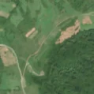
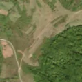

2,7 ha de pădure schimbată lângă Firtănuș
Între vara lui 2025 și 15 august 2026, pe aproximativ 2,7 ha de pădure din comuna Avrămești, lângă Firtănuș, județul Harghita, imaginile Sentinel-2 arată că vegetația a dispărut sau s-a schimbat puternic. E o schimbare care merită verificată.
Autorizația de tăiere
pășune, nu pădure
Analistul nu vede pădure tăiată: înainte era pășune, fâneață sau teren cu copaci răzleți și tufăriș, nu pădure închisă. Dacă s-au scos copaci de pe pășune, și asta cere autorizație de la ocolul silvic (Codul silvic, art. 60), dar aceste autorizații nu apar sigur în registrul public, așa că nu putem spune dacă există. Nu e dovadă de ilegalitate.
Ce se vede în poze: În poza detaliată zona marcată este o fâșie de pajiște cu rânduri rare de copaci, nu o pădure deasă. În poza «după» se vede mai ales pajiștea ofilită sau cosită, iar pădurea verde de alături nu a fost tăiată.


Înainte și după: Copernicus Sentinel-2, 10 m pe pixel, conturul zonei cu portocaliu. Poza detaliată (Esri World Imagery) e de acum 1–4 ani: arată ce era acolo înainte, nu tăierea.
Pe scurt
- Identificator
- 20260815_46402_25108
- Locul
- Firtănuș, comuna Avrămești, județul Harghita (SIRUTA 83847)
- Coordonate (centru)
- 46.40227, 25.10832 · Google Maps · OpenStreetMap
- Suprafața
- 2,7 ha (din pixeli de 10 m; ± câțiva pixeli pe margine)
- Pădurea întreagă
- în vara lui 2025 (de atunci, nori sau iarnă)
- Prima imagine cu schimbarea
- 15 august 2026
- Imagini în care se vede schimbarea
- 8
- Cât de sigur e semnalul din satelit
- medie
- Autorizația cea mai apropiată
- APV 2600141300170 · Ocolul Silvic Homorod, valabilă 16 februarie 2026 – 15 octombrie 2026, la 376 m de zonă
- Terenul
- în afara amenajamentelor silvice publicate (pășune, mal de apă sau pădure privată fără amenajament în registru)
- Garda Forestieră
- Brașov
Dacă vrei să verifici sau să sesizezi
- Pădurile din județul Harghita sunt în grija Gărzii Forestiere Brașov, care controlează tăierile și dă amenzile.
- Autorizația găsită în zonă e emisă de Ocolul Silvic Homorod.
- Formularul Gărzii Forestiere Naționale primește sesizări și fără nume. Trimite linkul acestei pagini, coordonatele și pozele. Dacă tăierea e în desfășurare, sună la 112.
- Autorizațiile și transporturile de lemn se pot căuta în Inspectorul Pădurii.
Pagina arată ce se vede din satelit și ce scrie în registrul public; nu e o dovadă în sine.
Cum citezi zona
Linkul acestei pagini nu se schimbă. Dacă zona iese vreodată de pe hartă, pagina rămâne, cu data și cu ce știam despre ea.
Pădurea RO, zona 20260815_46402_25108: 2,7 ha, Firtănuș, comuna Avrămești, județul Harghita; schimbare văzută din satelit între vara lui 2025 și 15 august 2026. https://iliemihai.github.io/padurea-ro/zona/20260815_46402_25108/ (consultat la [data]). Date: CC BY 4.0.
Datele zonei: GeoJSON · toate zonele: date deschise · licența CC BY 4.0.
Istoricul zonei pe hartă
Starea se poate schimba când registrul publică o autorizație sau când analistul vede poze mai bune. O ținem aici, ca un link citat să arate și ce spuneam atunci.
Pe hartă cel târziu din 5 noiembrie 2026.
- 5 noiembrie 2026 – azi · pășune, nu pădure
Detalii tehnice, pentru verificare
De ce acest nivel de încredere:
- văzută schimbată în 8 imagini diferite
- pădurea din jur e neschimbată
- ultima dată am văzut-o intactă în vara lui 2025 (de atunci, nori sau zăpadă)
- AI-ul vede pădure dispărută
Ce a văzut analistul cu context: În poza detaliată din 2021 fâșia alungită (573×121 m) are iarbă și copaci rari, în rânduri, iar coronamentul din 2000 este 0%, deci nu era pădure închisă. În «după» tonul bej apare pe toată pajiștea din jur, iar marginea pădurii verzi din dreapta rămâne neschimbată, fără margini ascuțite de tăiere. Autorizația APV este la 376 m și nu se suprapune, deci nu susține ideea unei tăieri; fâșia urmărește o potecă, deci nu se poate exclude cu totul o lucrare sau o curățare a pajiștii.
- Placa Sentinel-2
- 35TLM
- NDVI de referință
- 0.69
- NBR de referință
- 0.44
- Scăderea în pădurea din jur
- 0.0
- Persistență
- 0.98
- NDVI / NBR după
- 0.295 / 0.047
- Analistul de zi (model)
- taiere · 0.85 · claude-haiku-5-5
- Analistul cu context (model)
- pasune · 0.55
Cum se calculează fiecare: metodologia.
Pune harta zonei într-un articol
Copiază codul în articol (merge în majoritatea site-urilor de știri). Sau pune doar linkul: WhatsApp, Facebook și X arată singure poza zonei.